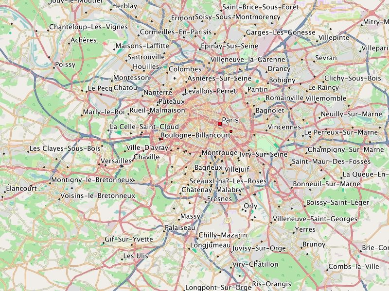

Metropolitan Paris.
France
English
Garmin GPS-device: (1.5 GB)France - Install image for micro SD card
Microsoft Windows: (1.5 GB)
Apple Mac OS X: (1.5 GB)
All operating systems: (1.5 GB)
Microsoft Windows: (1.5 GB)
Apple Mac OS X: (1.5 GB)
All operating systems: (1.5 GB)
We wish you lots of fun with the Freizeitkarte maps ... and many interesting trips.
France - GMAP Install Archive (full) for Garmin BaseCamp
France - GMAP Archive for Garmin BaseCamp
France - Image folder for QLandkarteFrench
Garmin GPS-device: (1.5 GB)
France - Install image for micro SD card
France - GMAP Install Archive (full) for Garmin BaseCamp
France - GMAP Archive for Garmin BaseCamp
France - Image folder for QLandkarte